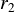
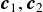
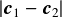
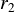
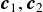
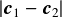
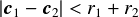
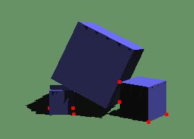
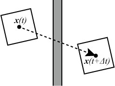
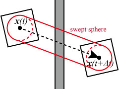

衝突処理の概要
剛体シミュレーションにおいて非常に重要な要素となるのが衝突の処理である． 1つの物体が単に自由落下する，放物運動するといったものであれば，衝突を考える必要はない． しかし，ほとんどの場合，2つ以上の物体や物体と境界との衝突を考えなければならない． 衝突を処理する際には，まず，
- 物体形状同士の重なりの判定(衝突検出, Collision Detection)
を行う必要がある．ここで注意点として，現実世界では物体同士が重なることはない (片方がもう片方にめり込んで変形することはあっても)． しかし，タイムステップ幅ごとに離散的に移動するコンピュータシミュレーションでは， 基本的に重なると考えて処理する必要がある． 衝突検出後，もしも，物体が重なっていたならば，そのタイムステップ内で衝突が発生したことになり， 次のステップとして，
- 衝突後の物体の位置の計算(衝突応答, Collision Response)
を行う． 物体同士が衝突すると作用・反作用の法則により，衝突位置・姿勢，速度に応じた反力が発生する． この反力を計算し，衝突後の位置，速度を計算するのが衝突応答処理である． このページでは衝突検出(or 衝突判定)処理について説明する(衝突応答についてはこちらを参照)．
衝突検出
衝突を処理するために，物体同士が衝突したかどうかを調べる必要がある．
これを衝突検出と呼ぶ．
例えば，それぞれ ,
の半径を持つ2つの球の衝突検出を考えてみる．
それぞれの中心座標をとすると，
中心座標間の距離はであり，
この距離が
,
の半径を持つ2つの球の衝突検出を考えてみる．
それぞれの中心座標をとすると，
中心座標間の距離はであり，
この距離が 以下であれば物体同士は衝突しているといえる．
条件式にすると，
以下であれば物体同士は衝突しているといえる．
条件式にすると，

となる．左辺は平方根の計算が伴うので実際には2乗距離がよく用いられる．
球同士は最も単純な例であるが， 線形代数などで習った点と面，点と線の距離，ベクトルの内積などを使うと三角形ポリゴン同士の衝突検出が可能となる． しかし，一般的なモデルは数百から数万のポリゴンで構成される． 例えば，100ポリゴンで構成されるモデル同士の衝突判定をそのまま行うとすると， それぞれのモデルを構成するポリゴンすべての組み合わせ(約5000)について試す必要が出てくる． これが1000ポリゴンだったら？モデルが2つでなく100個あったらどうだろう？ とてもリアルタイムでは計算できそうにない． そこでほとんどの物理シミュレーションエンジンではブロードフェーズ(Broadphase)とナローフェーズ(Narrowphase)という2つのフェーズに分けて 衝突検出を行う．
ブロードフェーズでは大まかな形状を使って衝突が発生する可能性のあるオブジェクトを探索し， ナローフェーズでは衝突可能性があるオブジェクト同士において正確な衝突検出を行う． 多数のオブジェクト同士が互いに衝突するような場合でも，実際に衝突している数は組み合わせの数に比べたら圧倒的に少ない． ブロードフェーズで衝突の可能性が全くないものをあらかじめ取り除いておくことで， 計算を非常に効率化することができる．
下図にBulletにおける物理計算パイプラインを示す．

Bulletの物理計算パイプライン(Bullet 2.80 Physics SDK Manual, p12より抜粋)
上の列は使われているデータの種類，下の列は左から右へと処理の流れを示している． 左端のForward Dynamicsでは重力の適用と現在の速度による予測位置を計算している． そして，2番目のBroadphaseではAABB(これが先ほど述べた大まかな形状)を計算し， AABB同士で衝突判定することで衝突の可能性がある物体のペアを探索している． 3番目のNarrowphaseではBroadphaseで見つかったペアに対して，形状同士の衝突判定を行う． そして最後にもう一度Forward Dynamicsということで， 今回と次回に解説する剛体間の衝突応答とその他の制約(まとめてConstraints)の影響を考慮して， 最終的な位置(次のステップでの位置)を求めている． ここではブロードフェーズ，ナローフェーズそれぞれで使われている代表的な手法を紹介する．
練習問題1
サンプルプログラム2をダウンロードして， 解凍したできたフォルダbtcubeをsrcフォルダに置いて，プログラムをビルド，実行してみよう．
リンク先の右の方の"Download"ボタンをクリックでダウンロードできる．
また，ソースコードを見て中身を理解しておこう． なお，サンプルプログラムでは，マウスの左ドラッグで視点を原点中心で回転，Shift+左ドラッグで視点の平行移動， Ctrl+左ドラッグでズーミング(視線方向の平行移動)ができる．また，物体をマウスでつかんで移動させることもできる．
(注意)
サンプルプログラム2をZドライブ以外(CドライブやUSBメモリ)でビルドしている場合，
ビルド後イベントとして設定してあるcopyコマンドが失敗する場合があります．
その場合は，メニューからプロジェクト→プロパティでbtcubeプロパティページというウィンドウを開き，
構成プロパティ → ビルド イベント → ビルド後イベント
の「コマンドライン」の部分を以下のように書き換えてください．
copy "$(ProjectDir)\..\..\bin\*.dll" "$(ProjectDir)\$(OutDir)" /V /Y
練習問題2
任意のキーを押すとさらに立方体を追加するように改良してみよう． このとき追加する位置をランダムに変更してみよう(乱数生成にはC言語のrand関数が使える)．
練習問題3
用いるキーを変えて立方体だけでなく球や円筒形状も追加できるようにしてみよう．
また，物体が落下する途中に固定された立方体を追加できるようにしてみよ．
(ヒント) 固定されたオブジェクトを追加するには，前回の資料で勉強したKinematic rigidbodyかStatic rigidbodyとして登録すればよい．
Kinematicの場合はCreateRigidBody関数で登録するときに質量を0に設定すればよい．
練習問題4
課題3で追加した固定された立方体を矢印キーで左右に動かせるようにしてみよう． また，固定オブジェクトをKinematicではなくDynamic rigidbodyにして動かしてみよう．
-
追加済みの剛体オブジェクトを後から動かすにはまず，CreateRigidBodyで剛体オブジェクトを生成した時にできたインスタンス
(btRigidBody型のポインタ)をグローバル変数にして記録しておく．
以下ではこのときの変数名をg_movebodyとしておく(変数名は何でも良い)．
Kinematic, Dynamicそれぞれで以下のようにすると動かせる．
- Kinematic rigidbodyの場合
getMotionState関数で物体の位置や姿勢を格納しているbtMotionState型の変数を取得して， getWorldTransform関数でワールド座標を得た後，その位置を変更し， 逆の手順で元に戻せばよい(setWorldTransform関数を使う)． インスタンスを格納するbtRigidBody型のポインタの変数名をg_movebodyとした場合のコード例を以下に示す．if(g_movebody){ btTransform new_trans; g_movebody->getMotionState()->getWorldTransform(new_trans); new_trans.getOrigin() += btVector3(0.02, 0.0, 0.0); g_movebody->getMotionState()->setWorldTransform(new_trans); }上記の例では剛体オブジェクトをx軸方向に+0.02だけ動かしている． もし，キーボードで位置を変えたときに描画だけが変わって，衝突判定位置が変わっていないような場合は， Kinematic rigidbodyを追加→g_movebodyにインスタンスを代入の後とかに以下のコードを追加してみてください．g_movebody->setCollisionFlags(g_movebody->getCollisionFlags() | btCollisionObject::CF_KINEMATIC_OBJECT); g_movebody->setActivationState(DISABLE_DEACTIVATION);
- Dynamic rigidbodyの場合
Dynamicオブジェクトの場合，座標値を直接設定しても動かないことがある． そのため，代わりにsetLinearVelocity関数を用いて，速度値を設定する．if(g_movebody){ g_movebody->setLinearVelocity(btVector3(1.0, 0.0, 0.0)) }上記の例では剛体オブジェクトにx軸方向の速度1を与えている． 上方向の速度を与えればオブジェクトをジャンプさせることもできるが， 連続してキーを押した場合に，飛び続けることになることには注意． また，現在の速度値に追加するような形にするならば，applyCentralImpulse関数などで力を加える方がよい場合もある．
- Kinematic rigidbodyの場合
-
矢印キーをGLFWで扱う場合は，Keyboard関数内のkeyによるswitch処理にGLFW_KEY_RIGHTやGLFW_KEY_LEFT
指定時の処理を追加すれば良い．
void Keyboard(GLFWwindow* window, int key, int scancode, int action, int mods) { if(ImGui::GetIO().WantCaptureKeyboard) return; // ImGUIウィンドウ上でのキーボードイベント時 if(action == GLFW_PRESS){ switch(key){ // デフォルトのキー設定 ・・・ case GLFW_KEY_RIGHT: // 右矢印キーが押されたときの処理 // 固定されたオブジェクトを右に少しだけ移動させる処理をここに書く break; case GLFW_KEY_LEFT: // 左矢印キーが押されたときの処理 // 固定されたオブジェクトを左に少しだけ移動させる処理をここに書く break; } } }
ブロードフェーズ
ブロードフェーズでは形状を包み込む単純な形状を使って衝突の可能性があるペアを探し出す． この形状を境界ボリューム(BV : Boundary Volume)と呼ぶ． 境界ボリュームに単純な形状を用いることで高速な衝突判定を行うことが可能となる． 境界ボリュームに求められる性質は以下．
- 交差判定のコストが小
- オブジェクト形状になるべく密着している
- 境界ボリュームの作成，整列の計算コストが小
- 回転と移動が容易
- 必要とするメモリ量が小
よく用いられる境界ボリュームを以下の図に示す．

境界ボリューム：左から境界球，AABB，OOBB，凸包
破線が境界ボリューム形状を表し， 左から境界球(Bounding Sphere)，AABB(軸平行境界ボックス, Axis-Aligned Bounding Box)， OOBB(Object-Oriented Bounding Box), 凸包(convex hull)と呼ばれる． 左から右にいくほど生成コスト，メモリが大きくなるが，逆に元の形状に対する密着度は高くなる．
ここではBulletに使われているAABBについてとAABB同士の衝突判定を高速に行うための方法を紹介する．
AABB
AABBはAxis-Aligned Bounding Boxの略で，日本語だと軸平行境界ボックスである．
各辺がx,y,z軸に平行になっている直方体となる(or 各面の法線が軸に平行)．
AABBの最大の利点は重なり判定がとても高速だということである．
下図のように単純な座標値の比較だけで判定することができる．

AABBの重なり判定
AABBの形状を表す方法には主に2つある． 1つは最大，最小座標を使う方法，もう1つは中心座標と辺の長さ(or 辺の長さの半分)を使う方法である． プログラムにするならば，
struct AABB
{
Vec3 min;
Vec3 max;
}
か
struct AABB
{
Vec3 cen;
Vec3 sl;
}
となる．ここで，Vec3は3次元の座標値(x,y,z)を格納する構造体とする．

AABBの定義方法
また，ポリゴンで構成された形状からAABBを求めるには，最大，最小座標を使う場合は， ポリゴンを構成する全頂点座標の中で各座標軸において最も大きいものと小さいものを探索すればよい．
AABB同士の重なり判定
AABB同士の重なり判定は低コストであるものの，
AABBはオブジェクトの数だけ存在するので，最初にいったのと同じ問題，
衝突判定ペア数の爆発的増加，という問題は残っている．
そのため，これを効率化するためのいくつかの方法が提案されている．
Bulletでは以下の3つが使われている．
- AABB木
- 3Dスイープ＆プルーン(3D sweep and prune)
- グリッド構造
それぞれ以下で簡単に説明する．
AABB木ではまず最初にすべての物体を囲むAABBを求め，それをルートノードとして，
ルートノードを含まれるオブジェクトによりを空間的に2つに分けてそれぞれのAABBをルートノードの子ノードとする．
もしも子ノードに含まれるオブジェクトが1つだけならばそれをノード端点(リーフAABB)とする．
2つ以上ならば同様に分割する．
これを繰り返すと木のように枝分かれしていく構造になるのでAABB木と呼ばれる．
衝突判定するときはルートノードのAABBとの重なりを調べ，
重なっていたら，子ノードのAABBとの重なりを調べ，
重なっている子ノードがあれば，その孫ノードを調べとしていくと最終的に重なるリーフノードが得られる．
全探索だと のオーダで組み合わせ数が増えていくが，
この方法だと
のオーダで組み合わせ数が増えていくが，
この方法だと のオーダですむ．
のオーダですむ．

AABB木
次のスイープ＆プルーンは，AABBを各軸に投影したときの端点の位置関係から衝突判定する方法である． ちょうど前節の「AABBの重なり判定」の図がそれに近くなる． 実際には判定しなければならないAABBの数が多いので，一旦すべてのAABBを軸に投影して， その端点(各端点は元のAABBへのリンクを持つ)を計算する． そして，端点の座標値によりソートし，同じAABBの端点が並んでいれば衝突なし， 別のAABBの端点が並んでいれば衝突の可能性があると判定する方法である． 3Dスイープ＆プルーンではこれをx,y,z軸すべてで行う． この方法の場合は，前ステップでの端点情報と 挿入ソートなどの元々のデータの大部分がソートされている場合に高速なソートアルゴリズムを使うととても効率的に 衝突判定することができる．
最後のグリッド構造はグリッド法，格子分割とも呼ばれる． これは空間を均一な格子で分割し，各格子に重なっているオブジェクト(AABB)をその格子に登録する． 衝突判定では対象となるAABBが属する格子の周囲の格子に含まれるAABBのみと衝突判定する方法である． 詳しくはこちらのページ (球の場合)を参照．このWebページにも書いたようにこの方法はGPUなどを用いた並列計算向きの方法である．
ワールドに渡すブロードフェース法の変数をそれぞれに合わせて変えてやると． Bulletでこれらの方法を切り替えることができる． 前回のコード修正で，InitBullet関数内で
// ブロードフェーズ法の設定(Dynamic AABB tree method) btDbvtBroadphase *broadphase = new btDbvtBroadphase(); ・・・ // Bulletのワールド作成 g_dynamicsworld = new btDiscreteDynamicsWorld(dispatcher, broadphase, solver, config);
としていたことを思いだしてほしい． 変数broadphaseの型によってどのブロードフェーズ法を用いるかが決まる． AABB木の場合はbtDbvtBroadphase, スイープ＆プルーンはbtAxisSweep3かbt32BitAxisSweep3， グリッド法はbtCudaBroadphaseである． ただし，グリッド法のbtCudaBroadphaseに関しては，名前にCUDAとあるようにGPUを使用したものなので， おそらく実習室のPC(グラフィックスはIntel HD4000)では使用は難しいでしょう．
練習問題5
ブロードフェーズの計算方法をスイープ＆プルーンに変更してみよ．なお，BulletのbtAxisSweep3とbt32BitAxisSweep3では，
定義時に計算空間の大きさ(AABBの最小，最大座標)を指定する必要がある．
特に問題なければ十分大きな範囲(ex. btVector3(-100, -100, -100), btVector3(100, 100, 100)など)を渡しておけばよい(余りに大きすぎると精度は落ちるので注意)．
補足 : btAxisSweep3は16ビット整数を使っているので登録できるオブジェクト数が16384までに制限される．
一方，bt32BitAxisSweep3はより多くのメモリを必要とするがもっと多くのオブジェクト(デフォルトでは1500000個)を扱える．
ナローフェーズ
衝突の可能性がペアが分かったら後は実際のオブジェクト同士で衝突判定を行えばよい． 衝突判定にはその形状ペア(球と球，球とボックス，三角形ポリゴンと三角形ポリゴンなど)により様々なアルゴリズムがある (例えばGJKアルゴリズム)． Bulletでは衝突ディスパッチャというものが各ペアに対して，オブジェクトの種類に応じて衝突アルゴリズムを決定する． 前回のプログラムのInitBullet関数で，
btCollisionDispatcher *dispatcher = new btCollisionDispatcher(config);
と設定していたのがディスパッチャである． 衝突ディスパッチャが選択するアルゴリズムの一覧は，Bullet User Manualのp.21に Collision Matrixとして表にまとめられていますので参照してほしい．
btCollisionDispatcher::registerCollisionAlgorithm
を使うと自分で作った衝突アルゴリズムをCollision Matrixに登録することもできる．
練習問題6
もし，衝突点の座標や法線が取得できればそこに何らかのエフェクトを追加するなどができるようになる．
衝突ディスパッチャを使うと衝突点座標を取得できる．衝突点を取得し，点(GL_POINTS)などで描画するようにしてみよう．
衝突点は以下のようなコードで取得できるので，これを描画関数(DrawBulletObjects)内に書く or Timer関数などに書いて衝突点情報をグローバル配列に格納/描画する．
int num_manifolds = g_dynamicsworld->getDispatcher()->getNumManifolds(); // 衝突候補のペアの数
for(int i = 0; i < num_manifolds; ++i){ // 各ペアを調べていく
// 衝突点を格納するためのキャッシュ(manifold)から情報を取得
btPersistentManifold* manifold = g_dynamicsworld->getDispatcher()->getManifoldByIndexInternal(i);
btCollisionObject* obA = const_cast<btCollisionObject*>(manifold->getBody0()); // 衝突ペアのうちのオブジェクトA
btCollisionObject* obB = const_cast<btCollisionObject*>(manifold->getBody1()); // 衝突ペアのうちのオブジェクトB
// 各オブジェクトのユーザーインデックス(練習問題6で使います)
int user_idx0 = obA->getUserIndex();
int user_idx1 = obB->getUserIndex();
int num_contacts = manifold->getNumContacts(); // オブジェクト間の衝突点数
for(int j = 0; j < num_contacts; ++j){
btManifoldPoint& pt = manifold->getContactPoint(j); // 衝突点キャッシュから衝突点座標を取得
if(pt.getDistance() <= 0.0f){ // 衝突点間の距離がゼロ以下なら実際に衝突している
// オブジェクトAの衝突点座標(const変数にしない場合の例)
btVector3& ptA = const_cast<btVector3&>(pt.getPositionWorldOnA());
// オブジェクトBの衝突点座標と法線(const変数として取得する場合の例)
const btVector3& ptB = pt.getPositionWorldOnB();
const btVector3& normalOnB = pt.m_normalWorldOnB;
// ここに衝突点情報を格納するor衝突点描画するコードを書く
}
}
}

衝突点を赤点で描画した例
練習問題7(option)
練習問題6の方法で得られた衝突しているオブジェクトの情報(btCollisionObject*)を使って，
触れると物体がワールドから消えてしまうオブジェクトを追加せよ．
また，物体が触れたときに特定の座標にその物体を移動させるオブジェクトも追加してみよ．
(ヒント1) 接触したオブジェクトがある特定のオブジェクトかどうかを判別するために，
btCollisionObjectのsetUserIndex,getUserIndex関数が使える．これはワールドに追加した衝突オブジェクトに任意の番号をつけたり，
つけた番号を参照したりできる関数で，サンプルプログラムでは番号0をデフォルトでつけるようにしてある．
(ヒント2) ワールドから衝突オブジェクトobjを消す場合は，
g_dynamicsworld->removeCollisionObject(obj);
とする．objは衝突点検出時に得られる"btCollisionObjectのポインタ"である．
移動させる場合はbtRigidBodyに変換する必要があり，btRigidBody::upcast関数を用いる．たとえば，
btTransform trans(btQuaternion(0, 0, 0, 1), btVector3(0, 3, 0));
btRigidBody::upcast(obj)->setCenterOfMassTransform(trans);とすると座標値(0,3,0)に初期姿勢の状態で移動する．
Continuous Collision Detection
ここまででナローフェーズにおける衝突判定の例としてGJKアルゴリズムを学んだ． BulletではGJKを含むさまざまな衝突判定アルゴリズムが用いられ(Bullet User Manual p.21参照)， これらにより衝突を検出することができる． しかし，まだ問題が残っている．これまでの話では物体の動きは考えていない． 特にとても速度の速い物体の場合，下図のようにすり抜けが発生してしまう．

tとt+Δtどちらの時間でもオブジェクトは壁とは重なっていないので衝突検出されずすり抜けてしまう
これを解決するためにBulletでは，CCD(Continuous Collision Detection)という方法が採用されている． 最初の回で説明したとおり， タイムステップ間の物体の動きは直線運動で近似される． あるタイムステップにおける位置から次のタイムステップへの位置へと物体形状をスイープさせると， ちょうどその物体が通った軌跡が立体形状で表される．スイープされた形状と衝突検出すれば， タイムステップ間で衝突が生じたかどうかを検出できる．
この方法ではスイープ形状を求める必要がある．しかし，単純に衝突したかどうかが分かればいいのであれば， 元の形状をそのまま使う必要は無い．元の形状に内包されていればどのような形状でもよい． Bulletでは下図のように球を用いてCCDを行っている(スイープ球:Swept Sphere)．

スイープ球(Swept Sphere)は壁と衝突している
スイープ球の設定にはbtRigidBodyの関数であるsetCcdSweptSphereRadiusを用いる．
body->setCcdSweptSphereRadius(0.5)
引数に半径を指定する． CCDの設定は個々のbtRigidBodyごとに行い， CCDをオンにするには，
body->setCcdMotionThreshold(0.05)
のように運動に対する閾値(Motion Threshold)を設定する必要がある． これは1タイムステップ間にこの値以上動いた場合はCCDがオンになることを意味し， 0を設定すると常にOFFとなる(デフォルト値は0)． CCDは計算に時間を要するので動きが速くなるであろうオブジェクトのみに設定すること．
練習問題8
視点位置から視線方向に球体を発射できるように改良し，発射速度を速くしたときにContinuous Collision DetectionをON/OFFするとどのようになるか確かめてみよう．
[視点情報の取得について]
サンプルプログラムではマウスによる視点移動のためにrxTrackballというクラス(rxTrackball.h, rxTrackball.cpp)を使っている．
このクラスは四元数を使った回転，ベクトルによる平行移動を内部で行っている．
main.cppではg_tbViewグローバル変数を介してこのrxTrackballクラスにアクセスしており，
視点位置，視線方向を取得するには，
// 視点位置，視線方向
double eye_pos[3], eye_dir[3];
double init_pos[3] = {0, 0, 0};
double init_dir[3] = {0, 0, -1};
g_tbView.CalLocalPos(eye_pos, init_pos);
g_tbView.CalLocalRot(eye_dir, init_dir);
とする．変数eye_posに現在の視点位置，eye_dirに視線方向が代入される．eye_posとeye_dirは配列なので，
Bullet側に渡すときにはbtVector3にするのを忘れないように．
Collision Filtering
物理エンジンを使ったアプリケーションでは必ずしもすべての剛体が衝突するわけではない． ゲームなどでもアイテムが敵キャラクターや壁をすり抜けるようにしたいこともあるだろう． このような場合のために，Bulletでは衝突フィルタリング(Collision Filtering)という機能が用意されている．
Bulletワールドに剛体オブジェクト(btRigidBody)をaddRigidBody関数で追加するときに， 第2引数にそのオブジェクトのグループ，第3引数に衝突処理を行うグループを表すマスクを指定してやると， 衝突フィルタリングがONになる．逆に何も指定しなければすべてのオブジェクトと衝突判定する． 以下に3種類の剛体オブジェクトについて設定してみた例を示す．
// 衝突応答のためのグループ
enum CollisionGroup{
RX_COL_NOTHING = 0, // 0000
RX_COL_GROUND = 1, // 0001
RX_COL_GROUP1 = 2, // 0010
RX_COL_GROUP2 = 4 // 0100
};
world->addRigidBody(ground_body, RX_COL_GROUND, RX_COL_GROUP1 | RX_COL_GROUP2);
world->addRigidBody(body1, RX_COL_GROUP1, RX_COL_GROUND);
world->addRigidBody(body2, RX_COL_GROUP2, RX_COL_GROUND | RX_COL_GROUP2);
このようにすると，床であるground_bodyは他のすべてのオブジェクトと衝突判定するが， body1は床としか衝突判定されず，body2は床と自分自身のグループのみ衝突判定し，body1とは衝突判定されなくなる． 衝突判定する際には衝突相手のグループ番号とマスクをAND演算して結果が1ならば実際に衝突判定処理を行い， 0ならば行わないようになっているため， グループ番号は，0001や0100のように1ビットだけ1である数としておき， マスクには衝突判定したいグループを"|"(OR演算)でつなげて指定すればよい．
練習問題9
衝突フィルタリングを使って追加する形状ごとに衝突の有無を設定してみよ．

衝突フィルタリングで同じ形状同士のみ(+床)衝突するようにした例．球形状が立方体形状をすり抜けている